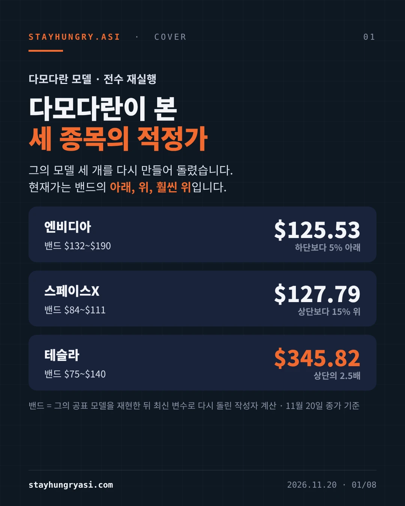
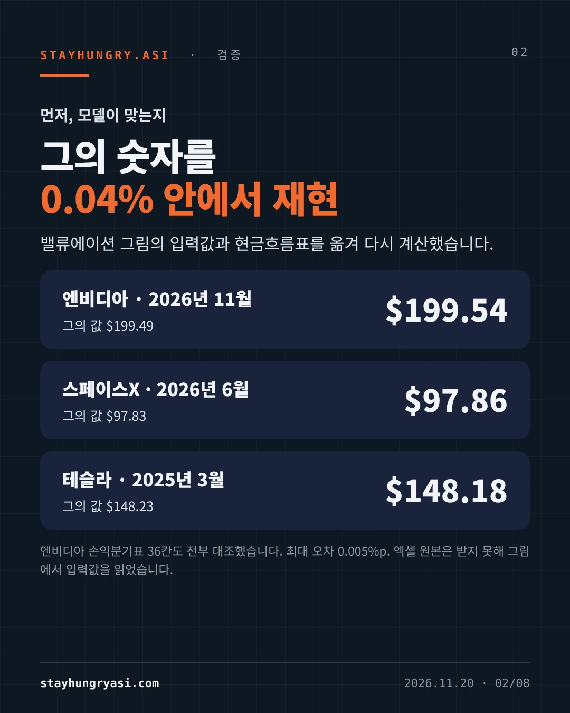
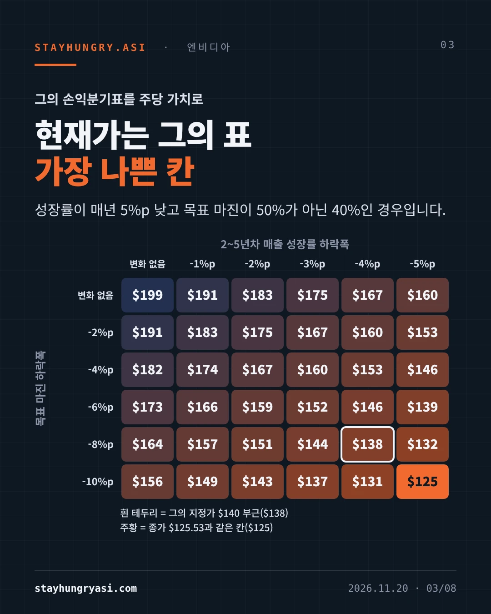
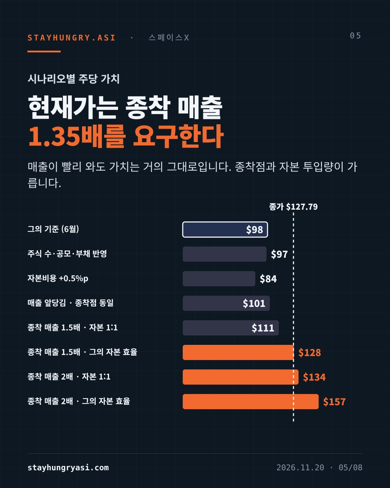

데이터 기준 2026년 11월 20일 미국 종가 · stayhungryasi.com
표기 규칙: 재현값과 엔비디아 손익분기표는 애스워스 다모다란 교수가 공표한 수치이고, 밴드와 시나리오는 그 모델을 다시 만들어 작성자가 계산한 값이다. 그가 직접 제시한 밴드가 아니다. 확인하지 못한 항목은 ‘미확인’으로 적었다. 투자 권유가 아니다.
핵심만 8장으로 요약했다. 이미지를 누르면 크게 볼 수 있다.
| 종목 | 그의 원값 | 재실행 밴드 | 낙관 확장 | 11월 20일 종가 | 위치 |
|---|---|---|---|---|---|
| 엔비디아 | $199.49 | $132~$190 | ~$244 | $125.53 | 하단보다 5% 아래 |
| 스페이스X | $97.83 | $84~$111 | $128~$157 | $127.79 | 상단보다 15% 위 |
| 테슬라 | $148.23 | $75~$140 | $190~$290 | $345.82 | 낙관 상단보다 20% 위 |
엑셀 원본은 받지 못했다. 각 글의 밸류에이션 그림에서 입력값과 10년 현금흐름표를 옮겨 같은 구조의 모델을 다시 만들었다.
| 모델 | 그의 주당 가치 | 재현값 | 오차 |
|---|---|---|---|
| 엔비디아 (2026-11-19 글) | $199.49 | $199.54 | +0.03% |
| 스페이스X (2026-06-04 글) | $97.83 | $97.86 | +0.04% |
| 테슬라 (2025-03-15 글) | $148.23 | $148.18 | -0.03% |
엔비디아 글의 손익분기표 36칸도 전부 대조했고 최대 오차는 0.005%p다. 표의 ‘성장률 하락’은 2~5년차 성장률을 낮추고 6~10년차를 그 값에서 줄여 가는 방식임을 이 대조로 확인했다.
그의 가정은 기준 매출 $3,030억, 1년차 성장 45%, 2~5년차 20%, 목표 영업이익률 50%(현재 66.5%), 자본비용 9.79%에서 9.00%다. 약정 약 $5,000억을 부채로 차감한다. 주당 가치는 $199.49다.
| 시나리오 | 주당 가치 | 구분 |
|---|---|---|
| 그의 기준 | $199.49 | 다모다란 수치 |
| 성장 -2%p, 마진 -4%p | $167 | 다모다란 수치 |
| 성장 -3%p, 마진 -6%p | $152 | 다모다란 수치 |
| 성장 -4%p, 마진 -8%p | $138 | 다모다란 수치 |
| 성장 -5%p, 마진 -10%p | $125 | 다모다란 수치 |
| 자본비용 +0.5%p | $176 | 작성자 가정 |
| 자본비용 +1.0%p | $157 | 작성자 가정 |
| 실패 확률 10% | $178 | 작성자 가정 |
| 일시 배상금 $500억 | $197 | 작성자 가정 |
| 성장 -3%p, 마진 -6%p, 자본비용 +0.5%p, 배상 $500억 | $132 | 작성자 가정 |
| 1년차 성장 75% (보도된 가이던스 반영) | $244 | 작성자 가정 |
그의 가정은 기준 매출 $187억, 10년차 매출 $4,200억, 10년차 영업이익률 38.1%, 자본비용 8.37%에서 8.25%다. 주당 가치는 $97.83이다.
| 시나리오 | 주당 가치 | 구분 |
|---|---|---|
| 그의 기준 (6월) | $97.83 | 다모다란 수치 |
| 주식 수 135.8억 주, 공모 $860억, 부채 $320억 반영 | $97 | 작성자 가정 |
| 자본비용 +0.5%p | $84 | 작성자 가정 |
| 자본비용 +1.0%p | $74 | 작성자 가정 |
| 매출을 앞당김(2027년 $1,690억), 종착점 동일 | $101 | 작성자 가정 |
| 위 + 신규 매출에 자본 1:1 투입 | $89 | 작성자 가정 |
| 종착 매출 1.5배($6,300억), 그의 자본 효율 | $128 | 작성자 가정 |
| 종착 매출 1.5배, 자본 1:1 투입 | $111 | 작성자 가정 |
| 종착 매출 1.5배, 자본 1:1, 자본비용 +0.5%p | $94 | 작성자 가정 |
| 종착 매출 2배($8,400억), 자본 1:1 투입 | $134 | 작성자 가정 |
| 종착 매출 2배, 그의 자본 효율 | $157 | 작성자 가정 |
그의 2025년 가정은 10년차 매출 $5,000억, 10년차 영업이익률 14.3%, 자본비용 9.37%에서 8.35%다. 주당 가치는 $148.23이다. 그의 2025년 예측은 매출 $1,289억에 이익률 13.2%였고, 실제는 매출 $948억에 이익률 4.6%였다.
출발점을 현재(매출 약 $1,030억, 이익률 4.6%, 주식 39.5억 주)로 옮겨 다시 돌린 주당 가치다(작성자 가정).
| 10년차 매출 \ 이익률 | 8% | 12% | 14.3% | 20% | 25% | 30% |
|---|---|---|---|---|---|---|
| $3,000억 | $44 | $67 | $80 | $112 | $140 | $168 |
| $5,000억 | $61 | $97 | $118 | $170 | $215 | $260 |
| $7,000억 | $77 | $127 | $155 | $227 | $289 | $351 |
| $1조 | $100 | $171 | $211 | $311 | $399 | $486 |
| 대상 | 시점 | 그의 가치 | 당시 가격 | 판정 |
|---|---|---|---|---|
| 페이스북 | 2012 | 주당 약 $27 | 공모가 $38 | 단기 적중, 장기 과소 |
| 우버 | 2014 | $59억 | 비상장 $170억 | 크게 과소 |
| 에어비앤비 | 2020 | 주당 약 $54 | 첫날 종가 $144.71 | 과소 |
| 조마토 | 2021 | 주당 ₹41 | 2024년 9월 ₹297.85 | 과소(본인 인정) |
| 페이티엠 | 2021 | ₹2,000 | 2022년 7월 ₹713 | 과대 |
| 엔비디아 | 2023 | 약 $24(분할 조정) | 약 $40.90 | 조기 매도 |
성장 기업에서 그의 가치는 대체로 낮았다. 독립적으로 집계된 적중률은 없다(미확인).